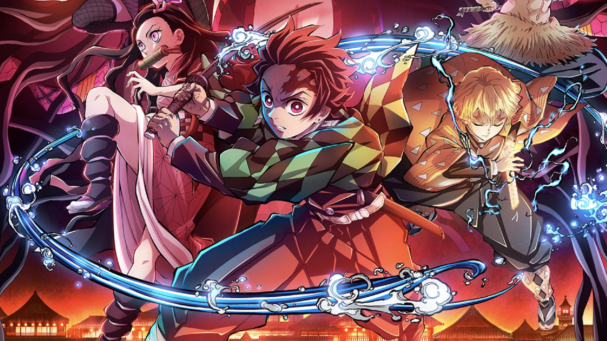

Explore the world of Demon Slayer

The elite force of Demon slayer crops

Enter the world of demon hunters, powerful breathing styles, and unforgettable battles.Demon Slayer: Kimetsu no Yaiba is a popular Japanese anime that follows the journey of Tanjiro Kamado, a kind-hearted boy who becomes a demon slayer after his family is killed by demons. His sister Nezuko survives but is turned into a demon, and Tanjiro fights to protect her while searching for a way to turn her back into a human. The anime is well known for its emotional story, powerful characters, and beautiful animation. 🌸⚔️
This fan-made website explores the characters, story arcs, breathing techniques, demons, and history behind the world of Demon Slayer. Whether you’re new to the anime or a long-time fan, there's something here for you.
"No matter how deep the night is, it always turns to day." — Kyojuro Rengoku
"Because demons were once human, too! Just like me, they were human, too!" —Tanjiro Kamado